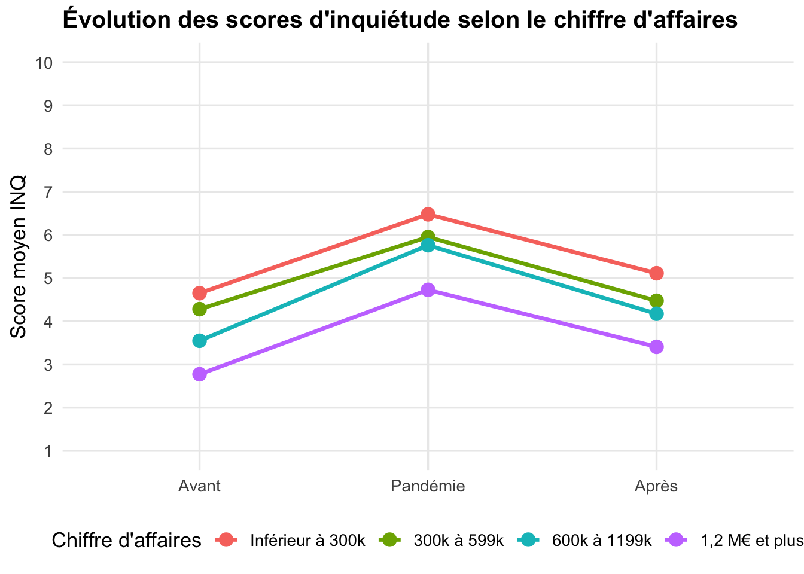
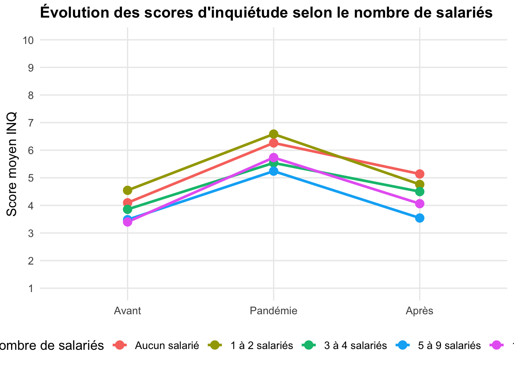
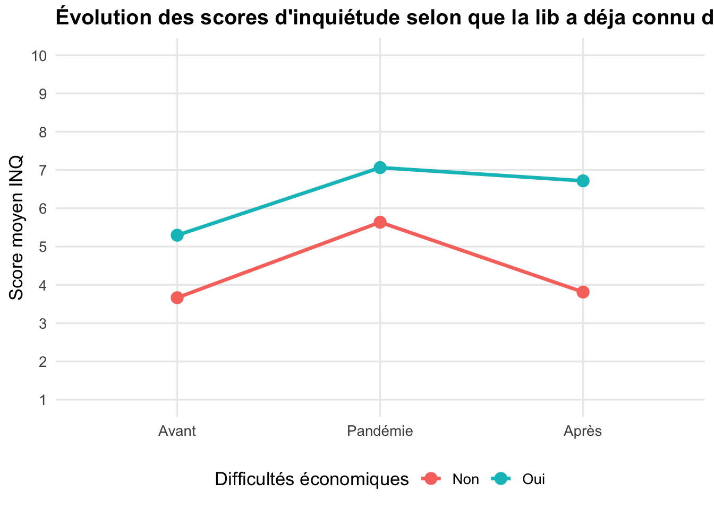

Afficher le code
library(tidyverse)J’analyse les réponses aux questions relatives aux niveaux d’inquiétude avant, pendant et après la pandémie sur une échelle de 1 à 10, qui n’avaient pas fait partie du travail conduit pour l’écriture du mémoire.
library(tidyverse)doc_quest <- read.csv2(
"https://minio.lab.sspcloud.fr/juleslapeuf/donnees_librairies_reproductibles.csv",
fileEncoding = "UTF-8",
check.names = FALSE
)
df_inq <- doc_quest %>%
rename(
sal_tpl = "Combien y a-t-il d’employés à temps plein ? (en chiffre)",
sal_tpa = "Combien y a-t-il d’employés à temps partiel ? (en chiffre)",
taille = "Quelle est la surface commerciale de votre librairie ? (en m²)",
ca = "Quel était le chiffre d’affaires de la librairie l’année dernière ? (en euro)",
type = "Votre librairie est-elle... ?",
inq_av = "Sur une échelle de 1 à 10, avant la pandémie, étiez-vous inquiet pour l’avenir de votre commerce ?",
inq_p = "Sur une échelle de 1 à 10, en plein cœur de la pandémie (avril 2020), étiez-vous inquiet pour l’avenir de votre commerce ?",
inq_ap = "Sur une échelle de 1 à 10, êtes-vous inquiet pour l’avenir de votre commerce ?",
inq_source = "Quelle est votre principale source d’inquiétude ?",
diff_eco = "Rencontrez-vous des difficultés économiques ?"
) %>%
select(sal_tpl, sal_tpa, taille, ca, type, inq_av, inq_p, inq_ap, diff_eco)
df_inq <- df_inq %>%
filter(type == "Généraliste")Je refais les recodages et catégorisations
#Taille
df_inq <- df_inq %>%
mutate(taille_reco = as.numeric(sub("\\D*(\\d+).*", "\\1", taille)))
#SALARIES
df_inq[1, 2] <- "0"
df_inq[18, 2] <- "0"
df_inq[21, 1] <- "1"
df_inq[21, 2] <- "2"
df_inq[40, 1] <- "0"
df_inq[51, 2] <- "1"
df_inq[54, 2] <- "0"
df_inq[79, 1] <- "0"
df_inq[83, 2] <- "0"
df_inq[103, 2] <- "0"
df_inq[132, 2] <- "0"
df_inq[139, 2] <- "0"
df_inq[162, 2] <- "0"
df_inq[194, 2] <- "0"
df_inq[226, 2] <- "0"
df_inq[248, 2] <- "2"
df_inq[272, 2] <- "1"
df_inq[272, 1] <- "0"
df_inq[300, 2] <- "0"
#Nombre de salariés à temps plein
df_inq$sal_tpl_rec <- df_inq$sal_tpl %>%
as.factor() %>%
fct_recode(
"1" = "1 + gérante",
"1" = "1 salariée à 35h.",
"1" = "1,5",
"1" = "1.5",
"1" = "1+1",
"2" = "2 et 2 co gérantes",
"0" = "2 gérents non salaries",
"3" = "3 salariés + 1 gérante",
"3" = "3,8"
) %>%
as.character() %>%
as.numeric()
#Nombre de salariés à temps partiel
df_inq$sal_tpa_rec <- df_inq$sal_tpa %>%
as.factor() %>%
fct_recode(
"1" = "0,5",
"1" = "1 (fin d'année)",
"2" = "1 + une apprentie",
"1" = "1 alternante",
"1" = "1 salarié à 30 h"
) %>%
as.character() %>%
as.numeric()
#Somme = Nombre total de salariés
df_inq <- df_inq %>%
mutate(nb_salaries = sal_tpl_rec + sal_tpa_rec)
df_inq[304, 4] <- "200000"
#Chiffre d'affaires
df_inq <- df_inq %>%
mutate(
ca_brut = str_to_lower(str_trim(ca)),
ca_rec = case_when(
# Réponses non exploitables
ca_brut %in% c(
"", "0", "warf warf warf",
"etablissement moyen",
"je ne sais plus",
"1ere année",
"pas encore fait une année complète",
"entre 07/23 et 03/24 : 285 000",
"75000€ ttc (de aôut à décembre)"
) ~ NA_real_,
# Valeurs exprimées en millions
ca_brut %in% c("1,1") ~ 1100000,
ca_brut == "1,2 millions euros" ~ 1200000,
ca_brut == "1,3 m €" ~ 1300000,
ca_brut %in% c("2 m", "2 millions") ~ 2000000,
ca_brut == "environs 2 000 000 €" ~ 2000000,
# Valeurs exprimées en milliers
ca_brut == "160 k€" ~ 160000,
ca_brut == "1923k€" ~ 1923000,
ca_brut == "197k€" ~ 197000,
ca_brut == "870 k€" ~ 870000,
ca_brut == "555 k€ ttc" ~ 555000,
# Valeurs particulières
ca_brut == "65" ~ 65000,
ca_brut == "150" ~ 150000,
ca_brut == "270" ~ 270000,
ca_brut == "170.000.00" ~ 170000,
ca_brut == "pas encore de bilan comptable terminé mais 165 000" ~ 165000,
ca_brut == "environ 205 000 euros" ~ 205000,
ca_brut == "plus de 500 000 €" ~ 500000,
ca_brut == "superieur 4 millions" ~ 4000000,
# Valeurs avec des séparateurs de milliers
TRUE ~ {
x <- ca_brut
# Supprimer les espaces classiques et insécables
x <- str_remove_all(x, "[[:space:]\u00A0\u202F]")
# Supprimer les mentions textuelles et monétaires
x <- str_remove_all(
x,
regex("€|euros?|ttc|ht|prévi|\\(prévi\\)", ignore_case = TRUE)
)
# Supprimer les points utilisés comme séparateurs de milliers
x <- str_replace_all(x, "(?<=\\d)\\.(?=\\d{3}(\\D|$))", "")
# Convertir la virgule décimale en point
x <- str_replace(x, ",", ".")
# Extraire le nombre
suppressWarnings(as.numeric(str_extract(x, "[0-9]+\\.?[0-9]*")))
}
)
) %>%
select(-ca_brut)
df_inq[142, 9] <- NA_character_ # Pour la colonne diff_eco
#Difficultés économiques éprouvées
df_inq$diff_eco_rec <- df_inq$diff_eco %>%
as.factor() %>%
fct_recode(
"1" = "Non",
"0" = "Oui"
) %>%
as.numeric()
###CATEGORISATION
#CA
df_inq <- df_inq %>%
mutate(
ca_rec_rec = case_when(
ca_rec < 300000 ~ "Inférieur à 300k",
ca_rec < 600000 & ca_rec >= 300000 ~ "300k à 599k",
ca_rec < 1200000 & ca_rec >= 600000 ~ "600k à 1199k",
ca_rec >= 1200000 ~ "1,2 M€ et plus",
TRUE ~ NA_character_
),
ca_rec_rec = factor(ca_rec_rec)
) %>%
mutate(
ca_rec_rec = fct_relevel(
ca_rec_rec,
"Inférieur à 300k",
"300k à 599k",
"600k à 1199k",
"1,2 M€ et plus"
)
)
#SALARIES
df_inq <- df_inq %>%
mutate(
nb_salaries_ = case_when(
nb_salaries == 0 ~ "Aucun salarié",
nb_salaries >= 1 & nb_salaries <= 2 ~ "1 à 2 salariés",
nb_salaries >= 3 & nb_salaries <= 4 ~ "3 à 4 salariés",
nb_salaries >= 5 & nb_salaries <= 9 ~ "5 à 9 salariés",
nb_salaries >= 10 ~ "10 et plus",
TRUE ~ NA_character_
),
nb_salaries_ = factor(
nb_salaries_,
levels = c(
"Aucun salarié",
"1 à 2 salariés",
"3 à 4 salariés",
"5 à 9 salariés",
"10 et plus"
)
)
)
#TAILLE
df_inq <- df_inq %>%
mutate(surfco_ = case_when(
taille_reco > 199 ~ "Plus de 200 m2",
taille_reco <= 199 & taille_reco > 99 ~ "Entre 100 et 199 m2",
taille_reco < 100 ~ "Moins de 100 m2",
TRUE ~ NA_character_
),
surfco_ = fct_relevel(surfco_,
"Moins de 100 m2",
"Entre 100 et 199 m2",
"Plus de 200 m2"))df_inq_ca <- df_inq %>%
drop_na(ca_rec_rec)
# MOYENNE PAR CHIFFRE D'AFFAIRES
moyennes_ca <- df_inq_ca %>%
group_by(ca_rec_rec) %>%
summarise(
Avant = mean(inq_av, na.rm = TRUE),
Pandémie = mean(inq_p, na.rm = TRUE),
Après = mean(inq_ap, na.rm = TRUE),
.groups = "drop"
) %>%
pivot_longer(
cols = c(Avant, Pandémie, Après),
names_to = "Période",
values_to = "Moyenne"
)
moyennes_ca$Période <- factor(
moyennes_ca$Période,
levels = c("Avant", "Pandémie", "Après")
)
ggplot(moyennes_ca,
aes(x = Période, y = Moyenne,
color = ca_rec_rec,
group = ca_rec_rec)) +
geom_line(linewidth = 1.2) +
geom_point(size = 3.5) +
scale_y_continuous(limits = c(1, 10), breaks = 1:10) +
labs(
title = "Évolution des scores d'inquiétude selon le chiffre d'affaires",
x = NULL,
y = "Score moyen INQ",
color = "Chiffre d'affaires"
) +
theme_minimal(base_size = 13) +
theme(
plot.title = element_text(face = "bold", size = 15),
panel.grid.minor = element_blank(),
legend.position = "bottom"
)
# MOYENNE PAR NOMBRE DE SALARIES
df_inq_salaries <- df_inq %>%
drop_na(nb_salaries_)
moyennes_salaries <- df_inq_salaries %>%
group_by(nb_salaries_) %>%
summarise(
Avant = mean(inq_av, na.rm = TRUE),
Pandémie = mean(inq_p, na.rm = TRUE),
Après = mean(inq_ap, na.rm = TRUE),
.groups = "drop"
) %>%
pivot_longer(
cols = c(Avant, Pandémie, Après),
names_to = "Période",
values_to = "Moyenne"
)
moyennes_salaries$Période <- factor(
moyennes_salaries$Période,
levels = c("Avant", "Pandémie", "Après")
)
ggplot(moyennes_salaries,
aes(x = Période, y = Moyenne,
color = nb_salaries_,
group = nb_salaries_)) +
geom_line(linewidth = 1.2) +
geom_point(size = 3.5) +
scale_y_continuous(limits = c(1, 10), breaks = 1:10) +
labs(
title = "Évolution des scores d'inquiétude selon le nombre de salariés",
x = NULL,
y = "Score moyen INQ",
color = "Nombre de salariés"
) +
theme_minimal(base_size = 13) +
theme(
plot.title = element_text(face = "bold", size = 15),
panel.grid.minor = element_blank(),
legend.position = "bottom"
)
# MOYENNE PAR DIFF_ECO
df_inq_diff_eco <- df_inq %>%
drop_na(diff_eco)
moyennes_diff_eco <- df_inq_diff_eco %>%
group_by(diff_eco) %>%
summarise(
Avant = mean(inq_av, na.rm = TRUE),
Pandémie = mean(inq_p, na.rm = TRUE),
Après = mean(inq_ap, na.rm = TRUE),
.groups = "drop"
) %>%
pivot_longer(
cols = c(Avant, Pandémie, Après),
names_to = "Période",
values_to = "Moyenne"
)
moyennes_diff_eco$Période <- factor(
moyennes_diff_eco$Période,
levels = c("Avant", "Pandémie", "Après")
)
ggplot(moyennes_diff_eco,
aes(x = Période, y = Moyenne,
color = diff_eco,
group = diff_eco)) +
geom_line(linewidth = 1.2) +
geom_point(size = 3.5) +
scale_y_continuous(limits = c(1, 10), breaks = 1:10) +
labs(
title = "Évolution des scores d'inquiétude selon que la lib a déja connu des diff éco",
x = NULL,
y = "Score moyen INQ",
color = "Difficultés économiques"
) +
theme_minimal(base_size = 13) +
theme(
plot.title = element_text(face = "bold", size = 15),
panel.grid.minor = element_blank(),
legend.position = "bottom"
)